Where 问句看起来最简单 —— 把地点挖掉、问一句就行。但它有个独特的陷阱：地点永远绑着一个介词，而介词决定你在问什么。Where are you from? 问出身，Where do you live? 问住处，Where did you stay? 问停留。挖掉地点的时候，不能把介词一起挖掉。另外课本第 12 题一句话里有两个地点，问哪个都算对，但问法不同。
课本 p.102–105
15 个陈述句 + 1 个例题
地点与介词
01先把造问句的骨架搭好
造 Where 问句只有两步，但第二步有个前提：先看清介词，再决定动词要不要留。
找地点 — 圈出那个地名或场所"I usually meet my friends in a downtown bookstore."
看介词 — 它跟着动词还是跟着地点meet sb in a place → 介词跟着地点走，问句里就消失：Where do you usually meet your friends?
配助动词 — 和动作的时态一致met → did；was → were；can → can。
但有一种介词不能丢：from。I'm from Seoul. → Where are you from?
这里的 from 不是「在某个地方」，而是「来自」的一部分。问出身时 from 必须留在句尾。
同理 Where do you come from?
My father was born in Chicago, but he grew up in Moscow.
→ Where was your father born? / Where did he grow up?
第 14 题
They saw each other in Seoul, after corresponding for three years.
→ Where did they meet? / How long had they been writing to each other?
第 11 题
I lived in Paris for five years, but I don't remember much.
→ Where did you live for five years? / How old were you then?
造第二个问句的技巧：找那个「没被问的部分」。
第 12 题的「出生」和「长大」是两个不同动作，各配一个地点；第 11 题除了地点还有「五年」和「太小记不清」。
凡是句子里藏着第二个信息的，都值得再问一句 —— 这是 Part III 和其他课最大的差别：你在主动推进对话。
C · 十个常用的 Where 问句开场
这些是真实对话里出现频率最高的 Where 问句，比造句练习更有用，可以当模板记。
Where are you from?
你哪儿人。问出身，最常用
Where do you live?
你住哪。和上一条不同，问现居
Where are you going?
你去哪。注意不加 to
Where were you born?
你在哪出生
Where did you get that?
你在哪买的/弄到的
Where were you last night?
你昨晚在哪。问行踪
Where does it hurt?
哪儿疼。固定说法
Where are we meeting?
我们在哪见。约定地点
Where have you been?
你去哪了（刚回来时问）
Where do you work?
你在哪工作
03课本例题：一句话，三个问句
例题的陈述句是 I'm planning to go to Mt. Sorak this summer.。课本给了三个问句，三个都在问地点，但语气和正式度不同。这是 Part III 第二次出现「同一句话多种问法」（第 17 课也有）。
Example
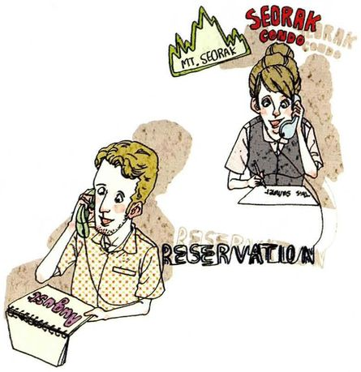
I'm planning to go to Mt. Sorak this summer. /ˈsɔːræk/
The statementI'm planning to go to Mt. Sorak this summer.
What to ask about地点是 Mt. Sorak，动词带 to，所以问句里 to 要消失。另外可问时间（this summer），那是 When 的题。
Questions you can ask①Where are you going to go on your vacation? ②Where do you want to go this summer? ③Where would you like to vacation?
三个问句的差别：
① be going to go —— 问已有计划，最中性；② do you want to —— 问意愿，更接近「你想去哪」；③ would you like to —— 最客气，而且这里的 vacation 作动词用（「去度假」），是美式口语里很自然的说法。
做题时记住第③种，因为 vacation 当动词的用法很少见。
不要写 Where are you going to go to Mt. Sorak?。
如果保留了具体地名（Mt. Sorak），这句话是是非问句（确认是不是去那儿），不是 Where 问句。要造 Where 问句，地名必须被挖掉。
✓ Where are you going to go?（地名被替换成 where）
✓ Are you going to go to Mt. Sorak?（保留地名，改成是非问句）
04十五个陈述句：怎么问出好问题
每张卡三段：The statement 课本原句，What to ask about 说清介词怎么处理、助动词怎么选，Questions you can ask 给三个问句。
01
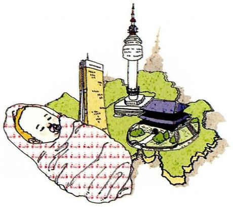
I'm from Seoul.
The statementI'm from Seoul.
What to ask aboutfrom 必须保留。这是这一课唯一不能丢的介词，因为它本身就是「出身」的一部分。
Questions you can ask①Where are you from? ②Where do you come from? ③How long did you live there?
02
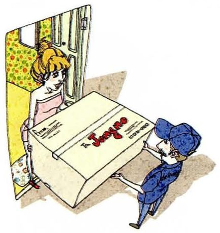
I live in Jongno.
The statementI live in Jongno.
What to ask about一般现在时 → do。in 跟着地点一起消失，因为 Where 已经包含了它。
Questions you can ask①Where do you live? ②Where exactly in Jongno? ③Where did you live before that?
03
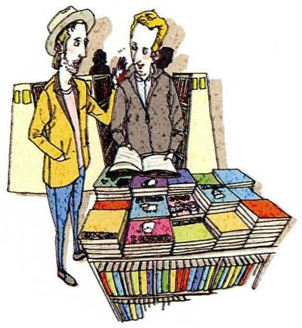
I usually meet my friends in a downtown bookstore.
The statementI usually meet my friends in a downtown bookstore.
What to ask about「usually」是习惯 → do。meet sb in a place，in 消失。这题也可问频率，那是 how often。
Questions you can ask①Where do you usually meet your friends? ②Where do you usually go with them? ③How often do you meet them?
04
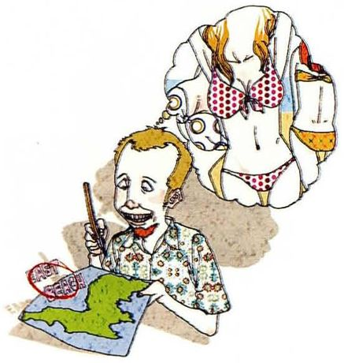
I am going to go to the East Beach this summer.
The statementI am going to go to the East Beach this summer.
What to ask about有 be going to → 用 are you going to。to 出现两次（going to go / go to the beach），问句里两个都不留。
Questions you can ask①Where are you going to go this summer? ②Where are you going on vacation? ③When are you going?
05
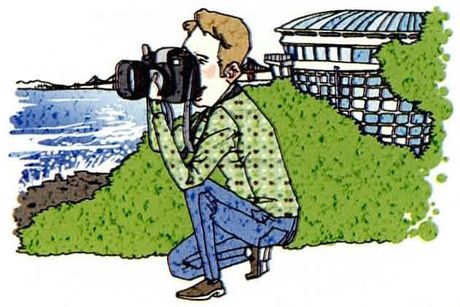
I was in Busan yesterday.
The statementI was in Busan yesterday.
What to ask about有 was → 用 were 倒装。in 消失。注意 was 的过去时问句主语是 you 时用 were。
Questions you can ask①Where were you yesterday? ②Where were you all day? ③What were you doing there?
06
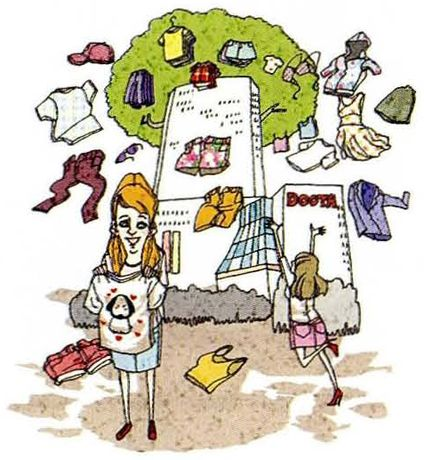
You can buy clothes cheaply at Dongdaemun.
The statementYou can buy clothes cheaply at Dongdaemun.
What to ask about有 can → can 提到主语前。at 消失。这题问的是「哪里能买到便宜的」，不是「哪里能买衣服」。
Questions you can ask①Where can you buy clothes cheaply? ②Where do you usually buy clothes? ③How much do they usually cost?
07
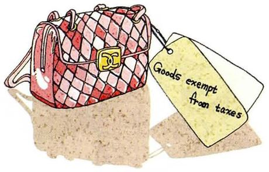
I bought it in a duty-free shop.
The statementI bought it in a duty-free shop.
What to ask about课本脚注：duty-free = 免关税的。过去时 bought → 用 did，还原成 buy。
Questions you can ask①Where did you buy it? ②Where did you get that bag? ③How much did it cost?
08
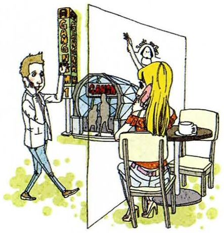
We can meet in some Gangnam coffee shop.
The statementWe can meet in some Gangnam coffee shop.
What to ask about有 can → can we。some 说明地点还不确定，问句可以顺带问「哪一家」。
Questions you can ask①Where can we meet? ②Which coffee shop do you have in mind? ③Where exactly in Gangnam?
09
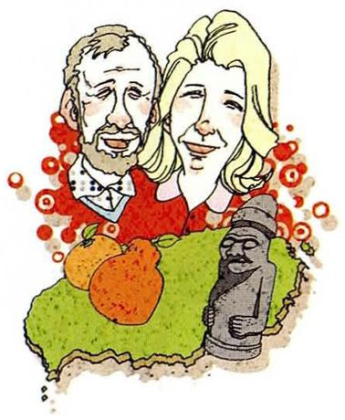
My parents live on Jeju Island.
The statementMy parents live on Jeju Island.
What to ask about岛屿用 on（不用 in）→ do。主语是 parents（复数），用 do 不用 does。
Questions you can ask①Where do your parents live? ②How long have they lived there? ③Where did they live before?
10
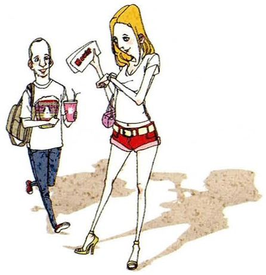
I first met my girlfriend at a movie theater.
The statementI first met my girlfriend at a movie theater.
What to ask aboutmet 过去时 → did，还原成 meet。at 消失。和第 19 课第 11 题（how did you meet）可以对照。
Questions you can ask①Where did you meet her? ②Where did you first meet? ③How did you meet?
11
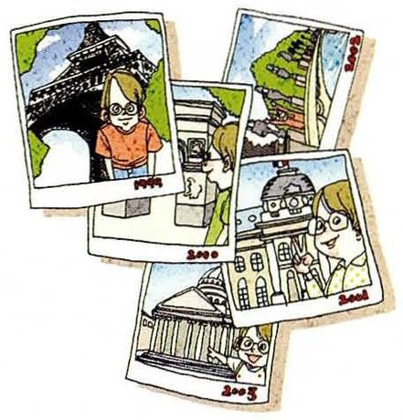
I lived in Paris for five years, but I was too young so I don't remember much about it.
The statementI lived in Paris for five years, but I was too young so I don't remember much about it.
What to ask aboutlived 过去时 → did。句子里有两个可问点：地点（Paris）和时长（five years），各配一个问法。
Questions you can ask①Where did you live for five years? ②How long did you live in Paris? ③How old were you then?
12
My father was born in Chicago, but he grew up in Moscow.
The statementMy father was born in Chicago, but he grew up in Moscow.
What to ask about两个地点、两个动作，要造两个问句。born 用 be 动词 → was；grew up → did grow up。
Questions you can ask①Where was your father born? ②Where did he grow up? ③How old was he when he moved?
13
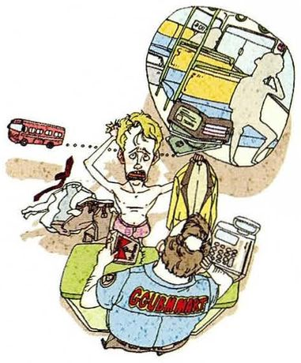
I left my purse on the bus.
The statementI left my purse on the bus.
What to ask aboutleft 过去时 → did。on the bus —— 交通工具用 on。「丢在」用 leave，不是 lose。
Questions you can ask①Where did you leave your purse? ②Where did you lose it? ③What did you do about it?
14
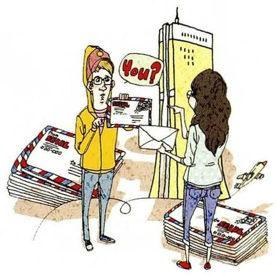
They saw each other for the first time in Seoul, after corresponding for three years.
The statementThey saw each other for the first time in Seoul, after corresponding for three years.
What to ask about课本脚注：correspond = 通信。地点是 Seoul → where。「通信三年」是另一层信息，可问多久。
Questions you can ask①Where did they see each other for the first time? ②How long had they been corresponding? ③How did they meet?
15
I went salsa dancing at a club last night. The place was packed, but it sure was fun!
The statementI went salsa dancing at a club last night. The place was packed, but it sure was fun!
What to ask about课本脚注：packed = 极度拥挤的。went → did。也可问「挤不挤」「好不好玩」。
Questions you can ask①Where did you go last night? ②Where did you go dancing? ③Where was that club?
05重点词汇（美式音标）
课首页脚注给了 3 个词。下面另补了地点介词和场所名词，这一课要说的东西全靠它们。
A · 课本脚注的 3 个词
词
音标
课上怎么用
中文
duty-free
/ˌduːti ˈfriː/
a duty-free shop 免税的。机场最常见
免税的
correspond
/ˌkɔːrəˈspɑːnd/
correspond with sb 通信。对人用 with
通信
packed
/pækt/
The place was packed. 挤满了人。比 crowded 更口语
挤满人的
B · 地点介词与场所名词
表达
音标
课上怎么用
中文
downtown
/ˈdaʊntaʊn/
a downtown bookstore 市中心的。作形容词或副词
市中心的
on the island
/ɑːn ði ˈaɪlənd/
live on an island 岛屿用 on，不用 in
在岛上
on the bus
/ɑːn ðə bʌs/
leave sth on the bus 交通工具一律用 on
在车上
at a club
/æt ə klʌb/
dancing at a club 具体场所用 at
在俱乐部
grow up
/ɡroʊ ʌp/
He grew up in Moscow. 长大。不用于地点以外的用法
长大
be born
/bi bɔːrn/
Where were you born? 出生。永远用被动
出生
purse
/pɜːrs/
leave your purse on the bus 女用手提包（美式）
手提包
duty
/ˈduːti/
pay duty on sth
关税
C · 问地点时的扩展句式
句式
音标
在问什么
中文
Where exactly…?
/wer ɪɡˈzæktli/
具体在哪。追问细节时用
具体在哪
Which + 名词…?
/wɪtʃ/
有选项时问「哪一个」，比 Where 精确
哪一个
Where have you been?
/wer hæv juː bɪn/
你去哪了（刚回来）
你去哪了
Where are you off to?
/wer ər juː ɔːf tuː/
你要去哪。比 Where are you going 随意
你上哪去
have in mind
/hæv ɪn maɪnd/
Which shop do you have in mind? 心里想的是
心里想
06老师大概率会问的问题
这一课的老师提问会围绕「你自己住哪、去过哪」，准备好真实的城市名和地点。
Where are you from, and where do you live now?
I'm from a small city in Shandong, and I live in Nanjing now — about nine hundred kilometres apart, which I only realised when I looked at the train times. The two are completely different: one is quiet and everybody knows my family, the other is loud and nobody knows my name.
这道题正好练 from 和 live 的区别。两个地方 + 一个具体对比，比只说两个地名有内容得多。
Which place in this list would you most like to visit?
Jeju Island, because it's the only one I've never been to and it sounds like somewhere you go for a reason rather than by accident. Paris I'd like to see again as an adult, since I've only been as a child. And Dongdaemun sounds like a market, which I'd probably find exhausting and then enjoy afterwards.
不只说「我想去 Jeju」，而是把三个地点各说一句，最后那句自嘲（exhausting and then enjoy afterwards）让它像真人说话。
Why do Chinese place names confuse English speakers?
Normally it's the order. We say Beijing Road East, English puts the generic word last — East Beijing Road. And provinces, cities and districts each have their own suffix that carries meaning in Chinese and nothing in English: Jiangsu is a province, Nanjing is a city, Xuanwu is a district. So I've learned to say "the city of Nanjing" or "Xuanwu district, in Nanjing" when I need to be clear.
Anywhere I'd need a car. I've never owned one and I don't want my day to depend on parking. That rules out most suburbs and a lot of places abroad, which I realise is a strong position to hold on very little experience. But I've watched friends move out for the space and end up driving forty minutes for milk, and it looks like a worse trade than it sounds.
How would you ask someone where they're from without sounding like a form?
Not "where are you from" first — it's the most common question and it makes people give the most rehearsed answer. I'd ask "how long have you been in this city" or "where were you before this". Both get an answer with a story in it, and both let them volunteer where they're from rather than being asked to declare it.
lets them volunteer it rather than being asked to declare it —— 这个区别很微妙，也正好呼应第 16 课「I wonder if」的逻辑：给对方留余地。
Describe your neighbourhood to me — where is everything?
I live on the fifth floor of an old building near the east gate. The market is on the corner, about a three-minute walk. The metro entrance is further, maybe eight minutes, past two banks and a small noodle shop I've never been into. The lab is north, twenty minutes on foot. That's the whole of my geography, honestly — I could draw it on the back of an envelope.
纯方位描述题，关键是每个地点都给距离和参照物（三分钟、过了两家银行）。最后一句 that's the whole of my geography 是很自然的收尾。
07这节课最容易犯的错
这一课的错误全在介词上：该留的没留，该去的没去。
✗Where are you going to? ✓Where are you going?
where 本身已经表示方向，后面不能加 to。这是中国学生最常犯的一个，因为中文说「去哪里」。
✗Where are you from? 写成 Where you are from? ✓Where are you from?
be 动词要倒装：are you，不是 you are。这一课第 1、5、12 题都会用到。
✗Where did you bought it? ✓Where did you buy it?
did 后面动词还原。第 7、10、11、13、14、15 题全都涉及。
✗My parents live in Jeju Island. ✓My parents live on Jeju Island.
岛屿用 on，不用 in。同理 on the beach、on the coast、on a farm。
✗Where do your parents lives? ✓Where do your parents live?
do 后面动词用原形，不加 s。主语是复数（parents），用 do 不用 does。
✗I left my purse in the bus. ✓I left my purse on the bus.
交通工具一律用 on：on the bus / on the train / on the plane。第 13 题就是这个搭配。
✗Where was you born? ✓Where were you born?
主语是 you，过去时 be 动词用 were。第 12 题最容易错，因为原句主语是 he (was born)。
✗Where did you grow up in? ✓Where did you grow up?
grow up 后面本来就不接介词（grow up in Moscow 的 in 属于地点）。问句里 where 替代了整个介词短语，不能再加 in。
08五十分钟怎么用
这一课的判断只有一条：介词留不留。练熟它，15 题都轻松。
课前 10 分钟：只看第 02 节 A 表的 from 和 to 两行from 必须留、to 绝不能加 —— 这两条覆盖这一课 90% 的风险。其余的介词（in / at / on）跟着地点一起消失。